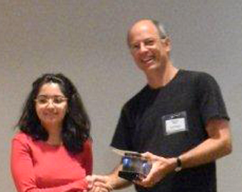
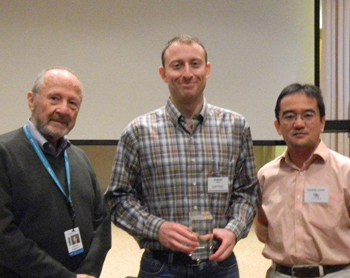

News Archives : 2011 : MCB Awards 2011 Peralta and Meselson Prizes to Ghazaleh Ashrafi and Jeremiah Cohen
by Richard Saltus
October 13, 2011

(l-r) Ghazaleh Ashrafi and Markus Meister

(l-r) Matthew Meselson, Jeremiah Cohen and Nao Uchida
Ghazaleh Ashrafi and Jeremiah Cohen received prizes given annually for outstanding research achievement at the Department’s retreat at Woods Hole in September.
Ashrafi, a graduate student in the Thomas L. Schwarz lab, received the 2011 Peralta Prize for her dissertation proposal essay, and Cohen, a post-doc in Naoshige Ushida’s lab, was awarded the Meselson Prize “for the most beautiful experiment of the year.”
The Peralta Prize is awarded annually to an MCB graduate student entering the third year of study and recognizes the most outstanding dissertation proposal submitted by 2nd year graduate students. It is given in memory of MCB Prof. Ernest Peralta, who passed away tragically in 1999.
Ashrafi’s thesis proposal focuses on two genes, PINK1 and Parkin, that are mutated in Parkinson ’s disease and appear to act in part by regulating degradation of damaged mitochondria. Ashrafi generated data showing that the genes also regulate motility of mitochondria, and for this contribution she was listed a coauthor of a paper in press in Cell.
In nominating her for the prize, Schwarz said she has excelled intellectually and is an experimental “powerhouse,” and praised her “clear thinking and clear writing” in her proposal. She has “acquired impressive depth in the field, not only in the questions that my lab is already engaged in, but also in areas such as autophagosome biology that she is spearheading in the lab, and with which we have no previous experience.” Schwarz wrote that he was nominating her for the Peralta Prize “with the greatest possible enthusiasm.”
Ashrafi called it “a great honor” to be awarded the prize, and thanked “my advisor and the members of my committee for their support and guidance.”
The funds from the prize, she said, will enable her to upgrade her computer and perform better image analysis.
The Meselson Prize was begun in 2008 commemorating the 50th anniversary of the groundbreaking 1958 experiment by MCB Professor Matthew Meselson and Franklin Stahl – at the time a Caltech grad student and post-doc, respectively. This experiment proved that DNA replication occurs when each strand copies itself to produce two identical daughter strands. The experiment validated the then hotly debated double-helix model of DNA proposed by James Watson and Francis Crick five years earlier. Brilliantly conceived and expertly executed, the Meselson-Stahl work has been called “the most beautiful experiment in biology.” The Meselson Prize for “the most beautiful experiment of the year” is awarded to an MCB graduate student or team.
Cohen’s essay was titled: “Dopaminergic and GABAergic neurons in the ventral tegmental area convey distinct signals for reward and punishment”.
In his essay, he described a set of experiments to determine how certain neurons in the mouse brain broadcast reinforcement signals – for reward or punishment – to the rest of the brain.
The results, Cohen wrote, showed that dopaminergic neurons record the difference between what the animal expects and what it receives. At the same time, GABAergic neurons “keep track of the expectation of reward, a signal that dopaminergic neurons can compare to the actual reward received, to compute reward prediction error.” The findings may be applicable to the study and treatment of drug dependence, Cohen said, because they “give a potential mechanism for how drugs can hijack the reward system.”
When Uchida nominated his student for the prize, he wrote that he believed the study will become a model for subsequent studies aimed at dissecting out how different neuron types contribute to a given function of the neural network. “Given the clarity and the importance of the distinct signals that the two types of neurons convey, I would rank the beauty of this study a 10,” Uchida declared.
MCB professor Venki Murthy, who also supported Cohen’s nomination, said, "Jeremiah's experiment is beautiful because it brings a high-level concept about motivation and reward to the level of neural circuits, paving the way for a biological study of them using modern tools."
After receive the Meselson prize, Cohen said, “I’m honored and humbled to receive the award for work done with Sebastian Haesler (fellow postdoc) and Nao Uchida. I will use the funds for travel to conferences.”
[October 13th, 2011]